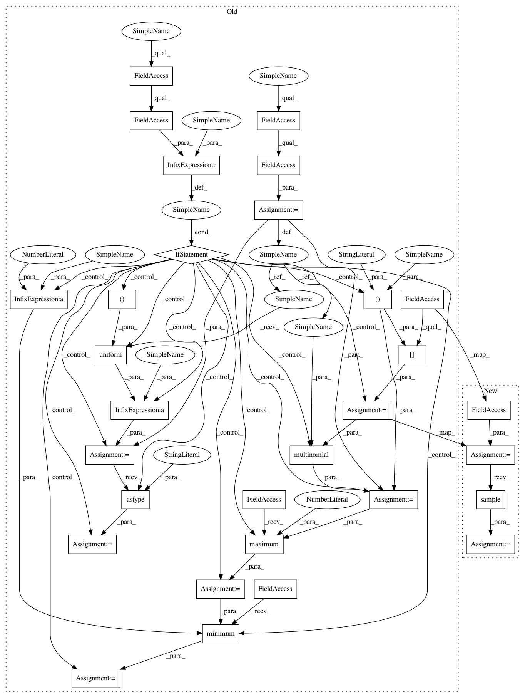

8ec91c97eb64bbe3e5030248b08d3870a5b4cb60,theanolm/network/samplingoutputlayer.py,SamplingOutputLayer,_get_sample_tensors,#SamplingOutputLayer#Any#,97
Before Change
num_sequences = layer_input.shape[1]
num_samples = self._network.num_noise_samples
num_classes = numpy.int64(self._network.vocabulary.num_classes())
random = self._network.random
minibatch_size = num_time_steps * num_sequences
if self._network.noise_probs is None:
// The upper bound is exclusive, so this always creates samples that
// are < num_classes.
num_batch_samples = minibatch_size * num_samples
sample = random.uniform((num_batch_samples,)) * num_classes
sample = sample.astype("int64")
else:
// We repeat the distribution for each mini-batch element, and sample
// k noise words per mini-batch element. k < number of outpus, so
// it"s possible without replacement.
class_probs = self._network.noise_probs[None, :]
class_probs = tensor.tile(class_probs, [minibatch_size, 1])
// Since we sample different noise words for different data words, we
// could set the probability of the correct data words to zero, as
// suggested in the BlackOut paper. That seems to result in a little
// bit worse model with NCE and BlackOut.
// target_class_ids = self._network.target_class_ids.flatten()
// target_sample_ids = tensor.arange(minibatch_size)
// class_probs = tensor.set_subtensor(
// class_probs[(target_sample_ids, target_class_ids)], 0)
// denominators = class_probs.sum(1)
// denominators = denominators[:, None]
// class_probs /= denominators
sample = multinomial(random, class_probs, num_samples)
// For some reason (maybe a rounding error) it may happen that the
// sample contains a very high or negative value.
sample = tensor.maximum(sample, 0)
sample = tensor.minimum(sample, num_classes - 1)
sample = sample.reshape([num_time_steps, num_sequences, num_samples])
return sample, self._get_target_preact(layer_input, sample)
def _get_seqshared_sample_tensors(self, layer_input):
After Change
num_sequences = layer_input.shape[1]
num_samples = self._network.num_noise_samples
num_classes = numpy.int64(self._network.vocabulary.num_classes())
noise_sampler = self._network.noise_sampler
minibatch_size = num_time_steps * num_sequences
sample = noise_sampler.sample(minibatch_size, num_samples)
sample = sample.reshape([num_time_steps, num_sequences, num_samples])
return sample, self._get_target_preact(layer_input, sample)
def _get_seqshared_sample_tensors(self, layer_input):
In pattern: SUPERPATTERN
Frequency: 3
Non-data size: 30
Instances
Project Name: senarvi/theanolm
Commit Name: 8ec91c97eb64bbe3e5030248b08d3870a5b4cb60
Time: 2017-08-01
Author: seppo.git@marjaniemi.com
File Name: theanolm/network/samplingoutputlayer.py
Class Name: SamplingOutputLayer
Method Name: _get_sample_tensors
Project Name: senarvi/theanolm
Commit Name: 8ec91c97eb64bbe3e5030248b08d3870a5b4cb60
Time: 2017-08-01
Author: seppo.git@marjaniemi.com
File Name: theanolm/network/samplingoutputlayer.py
Class Name: SamplingOutputLayer
Method Name: _get_shared_sample_tensors
Project Name: senarvi/theanolm
Commit Name: 8ec91c97eb64bbe3e5030248b08d3870a5b4cb60
Time: 2017-08-01
Author: seppo.git@marjaniemi.com
File Name: theanolm/network/samplingoutputlayer.py
Class Name: SamplingOutputLayer
Method Name: _get_seqshared_sample_tensors
Project Name: senarvi/theanolm
Commit Name: 8ec91c97eb64bbe3e5030248b08d3870a5b4cb60
Time: 2017-08-01
Author: seppo.git@marjaniemi.com
File Name: theanolm/network/samplingoutputlayer.py
Class Name: SamplingOutputLayer
Method Name: _get_sample_tensors